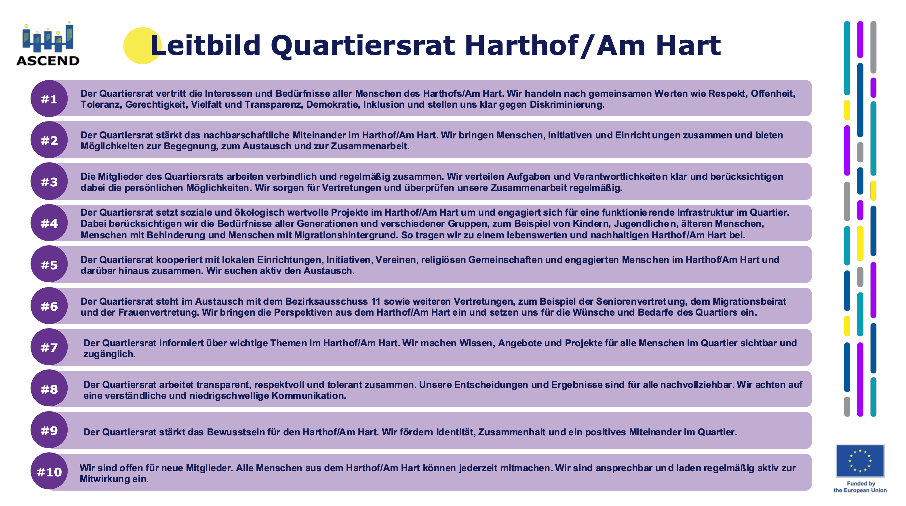
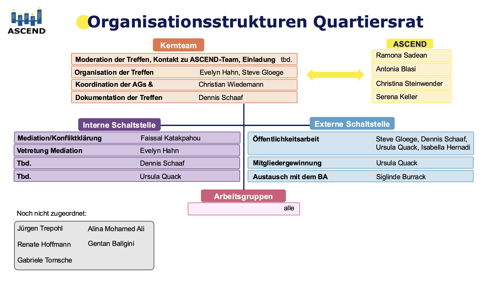

harthof.quartiersrat.de
Quartiersrat Harthof / Am Hart
Startseite
Quartiersrat
Leitbild
Veranstaltungen
Mitmachen
Leitbild
Leitbild Quartiersrat Harthof / Am Hart

Organisationsstrukturen
Organigramm Quartiersrat Harthof / Am Hart
